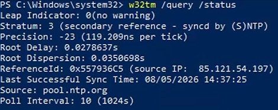
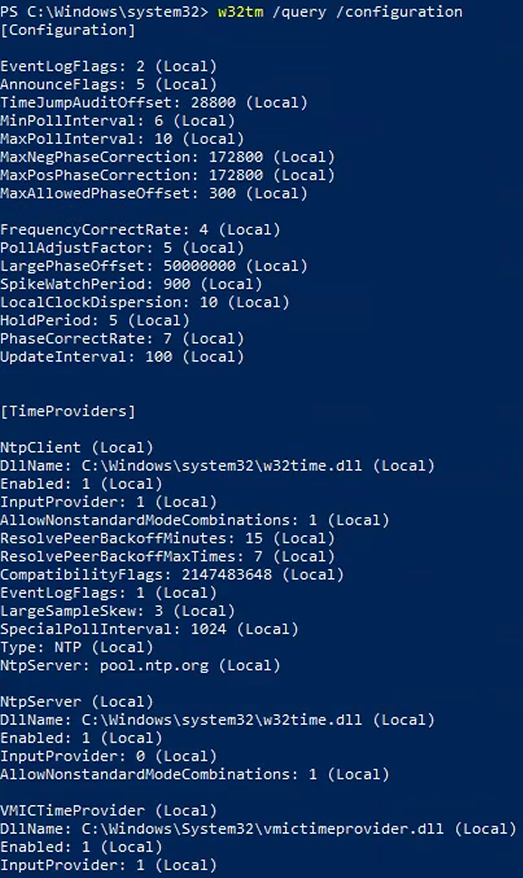

Objective
This check verifies that time synchronization (NTP)
is correctly configured and operational in the Active Directory environment.
Accurate time synchronization is critical for:
- Kerberos authentication
- Domain logons
- Active Directory replication
- Security event correlation
Prerequisites
- Domain account with read or admin permissions
- Access to at least one Domain Controller
- PowerShell or Command Prompt access
Verify Time Synchronization
Open Command Prompt or PowerShell on a Domain Controller and run:
w32tm /query /status
Verify the following:
- A valid Source is displayed
- No synchronization errors are reported
- The clock appears synchronized correctly
Common valid sources:
- domain controller hostname
- time.windows.com
- pool.ntp.org
- internal NTP server
- ✅ Valid source displayed = synchronization operational
- ⚠️ Local CMOS Clock = possible NTP issue
- ❌ Errors or unsynchronized state = NTP issue

Verify Time Source Configuration
Verify the configured NTP source:
w32tm /query /configuration
Verify that:
- An external or internal NTP server is configured
- The PDC Emulator is configured as a reliable time source
- No invalid or missing NTP configuration is detected
- ✅ Valid NTP configuration = OK
- ⚠️ Missing or unclear source = WARNING
- ❌ No valid NTP configuration = NOK

Result Interpretation
- ✅ OK – Time synchronization operational and correctly configured.
- ⚠️ WARNING – Minor configuration or synchronization issues detected.
- ❌ NOK – Time synchronization failure or invalid NTP source.